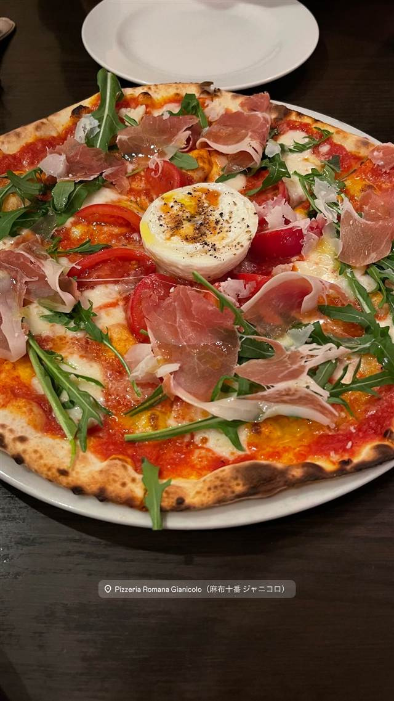
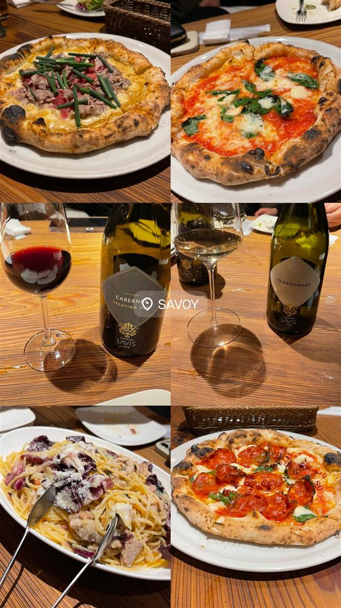
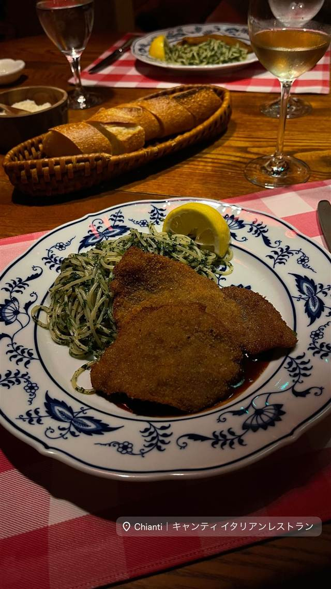

Grill & Pasta es 麻布十番
六本木Ajitoの姉妹店、特製グリルで焼く牡蠣グラタン
グリル&パスタ エス麻布十番
六本木の人気店「Ajito」と、覆面調査で三ツ星評価の「CUCINA ITALIANA ARIA」の姉妹店として2014年9月に麻布十番にオープンしたイタリアン。特製グリルで焼く肉・魚料理と、もちもち食感の自家製生パスタが看板メニュー。
TRIVIA
豆知識
- 六本木の人気店「Ajito」の姉妹店として2014年に麻布十番へ出店した
- 店内はニューヨーク・ブルックリン風の隠れ家的な雰囲気にまとめられている
REVIEWS
世間の評判
3.64食べログ
もちもち生パスタと柔らかい肉料理
- もちもちとした生パスタの食感の良さを評価する声が多くみられる
- グリルした肉料理は柔らかく食べやすいという評価が多くみられる
- 地下にあるブルックリン風のカジュアルな内装と雰囲気を評価する声が多い
一休.com 口コミ11件
| 創業 | 2014年9月開業 |
|---|---|
| 系譜 | 六本木の人気店「Ajito」や、雑誌の覆面調査で三ツ星評価を受けた「CUCINA ITALIANA ARIA」の姉妹店 |
| 看板 | 牡蠣グラタン、もちもちの自家製生パスタ、特製グリルで焼く肉・魚料理 |
| こだわり | 特製グリルで肉・魚の旨みを最大限に引き出し、もちもち食感の自家製生パスタを提供。イタリアンをベースに和のテイストも取り入れる |
| 掲載・評価 | 姉妹店CUCINA ITALIANA ARIAが雑誌の覆面調査で三ツ星評価を獲得 |
| どこから | 都心 |
| 予算 | 昼 ¥1,000～¥1,999 夜 ¥4,000～¥4,999 |
| 場所 | 麻布十番 東京都港区麻布十番 |
| メモ | カウンター含め66席、5〜6名向け個室あり。誕生日・記念日利用や女子会にも人気 |
食べたもの：牡蠣グラタン・白ワイン / パスタ
NEARBY
近い店・同じ系統の店
-
 パスタ 三軒茶屋駅
トラットリア ピッツェリア ラルテ（Trattoria e Pizzeria L'ARTE）
ビブグルマン掲載、ピザ百名店4度選出のVPN認定ナポリピッツァ
昼 ¥3,000～¥3,999 夜 ¥8,000～¥9,999
パスタ 三軒茶屋駅
トラットリア ピッツェリア ラルテ（Trattoria e Pizzeria L'ARTE）
ビブグルマン掲載、ピザ百名店4度選出のVPN認定ナポリピッツァ
昼 ¥3,000～¥3,999 夜 ¥8,000～¥9,999
-
 パスタ 恵比寿
BANDERUOLA-Cuscusseria-バンデルオーラ
シチリア・トラーパニ郷土料理クスクスを専用の器で蒸す製法を再現する専門店
昼 ¥1,000～¥1,999 夜 ¥6,000～¥7,999
パスタ 恵比寿
BANDERUOLA-Cuscusseria-バンデルオーラ
シチリア・トラーパニ郷土料理クスクスを専用の器で蒸す製法を再現する専門店
昼 ¥1,000～¥1,999 夜 ¥6,000～¥7,999
-

ピザ 麻布十番 ピッツェリア ロマーナ ジャニコロ サバティーニで20年修業した店主が焼くローマ風薄生地ピッツァ 夜 ¥5,000～¥5,999 -
 パスタ ワイキキ
Arancino di Mare
ハワイ最高のイタリアンに選ばれた、直輸入食材のパスタ
昼 ¥2,000～¥2,999 夜 ¥15,000～¥19,999
パスタ ワイキキ
Arancino di Mare
ハワイ最高のイタリアンに選ばれた、直輸入食材のパスタ
昼 ¥2,000～¥2,999 夜 ¥15,000～¥19,999
-

ピザ 麻布十番 SAVOY クラシック アメリカン風ピザ全盛の時代に本格ナポリピッツァを日本に広めた先駆け的存在 昼 ¥1,000～¥1,999 夜 ¥2,000～¥2,999 -

イタリアン 六本木一丁目 キャンティ 飯倉片町本店 1960年開業、大葉を使うバジリコパスタの元祖とされる日本のイタリア料理店の草分け 昼 ¥8,000～¥9,999 夜 ¥20,000～¥29,999
ONSEN & SAUNA